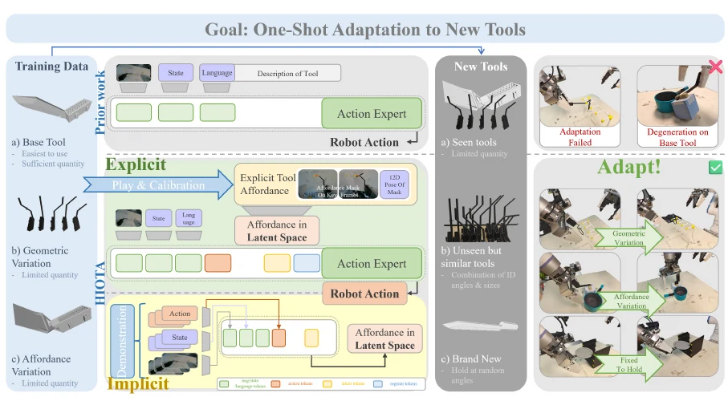
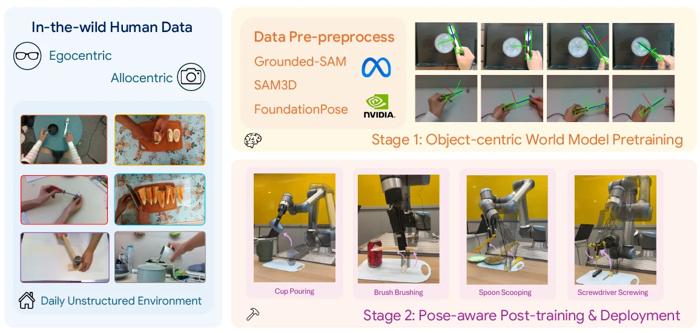
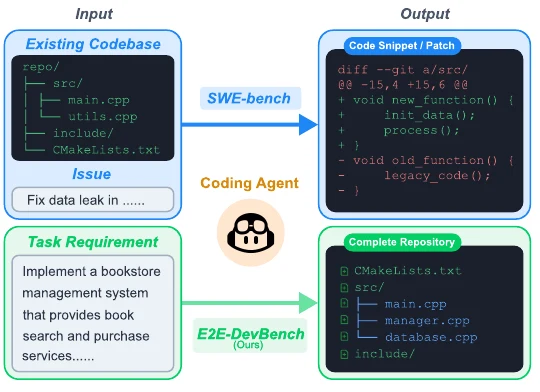

A2-VLA: Adapting Vision-Language-Action Policies to New Tools through Agentic Affordance Discovery
Chenyuan Zhou*, Chaoyi Huang*, Zibo Wang*, Zhiyan Li, Yong-Lu Li.
*Equal contribution. Under review at CVPR 2027.
👋 Hi! I'm Chaoyi Huang (黄超逸), a fourth-year computer science undergraduate in the ACM Honors Class at Shanghai Jiao Tong University, advised by Prof. Yong Yu. I expect to graduate in June 2027.
🤖 I'm a research assistant at the University of Hong Kong. My work focuses on robot learning and tool use.
🌱 How can a robot tell which part of an unfamiliar tool to use? Once it starts acting, how can it tell whether the action worked? I study these questions through robot learning, simulation, and experiments on physical robots.

Chenyuan Zhou*, Chaoyi Huang*, Zibo Wang*, Zhiyan Li, Yong-Lu Li.
*Equal contribution. Under review at CVPR 2027.

P2P-T learns tool poses from videos of people using tools. Those poses guide a robot as it learns the same manipulation skills. Project page · Preprint

ProjDevBench evaluates whether a coding agent can build a complete software project from a specification. Preprint
– present
OpenDriveLab & JC STEM Lab
Research Assistant · Advised by Prof. Hongyang Li
Robot learning and manipulation
Started
RHOS Lab, Machine Vision and Intelligence Group
Research Assistant · Advised by Prof. Yong-Lu Li and Prof. Cewu Lu
Robotic tool use and affordance learning
🏃 I'm a fan of many kinds of sports, like 🏀basketball, 🏸badminton, ⚾baseball, 🎾tennis, 🧗climbing, and 🤺swordplay. Maybe I'm not that professional, but I can get familiar to a new sport very quickly.
🚗 I'm also a fan of driving and racing cars, especially WRC.
🎧 ♪d(´▽｀)b
🧑🍳 I believe that I have a talent for cooking, and I'm working hard to extend recipes.